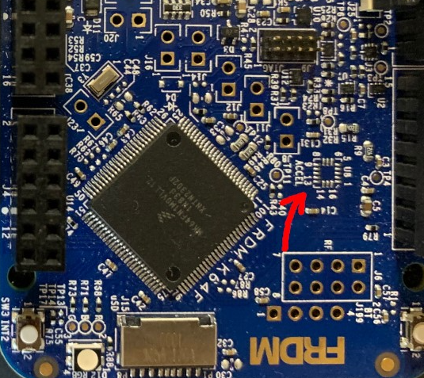

Lab 4 : Serial UART and I2C Communication
Seneca College SEP600 Embedded Systems
Introduction
Documentation of the Cortex-M4 instruction set, board user's guide, and the microcontroller reference manual can be found here:
Cortex M4
FRDM-K64F
- FRDM-K64F Freedom Module User’s Guide (From nxp.com)
- Kinetis K64 Reference Manual (From nxp.com)
- FRDM-K64F mbed
FRDM-K66F
- FRDM-K66F Freedom Module User’s Guide (From nxp.com)
- Kinetis K66 Reference Manual (From nxp.com)
- FRDM-K66F mbed
Materials
- Safety glasses (PPE)
- Breadboard
- Jumper Wires
Preparation
Lab Preparation Question
- Read over the lab and understand the procedures.
Procedures
Part 1: Onboard I2C Accelerometer and Magnetometer
In Part 1, we'll take a look at how to setup getting reading from the onboard accelerometer and magnetometer.
The location U8 on the Freedom Board should be assembled with the FXOS8700CQ accelerometer chip.

Figure 4.1 Freedom Board with missing FXOS8700CQ accelerometer chip
-
In order to use the FXOS8700CQ, you'll need to add the FXOS8700CQ library to your project. Start Mbed Studio than go to File > Add Library to Active Program. When prompted, provide the following link https://os.mbed.com/teams/NXP/code/FXOS8700Q/.
-
The I2C pins used to connect to the accelerometer for the Freedom board are as follow:
K64F K66F SDA PTE25 PTD9 SCL PTE24 PTD8 Start your program with the following code to include the proper library and setup I2C.
#include "mbed.h" #include "FXOS8700Q.h" I2C i2c(I2C_SDA, I2C_SCL); // replace with I2C pins -
Next, we'll create the accelerometer and magnetometer objects using the I2C object we created and the accelerometer's address. You can find the address in the header file.
FXOS8700QAccelerometer acc(i2c, FXOS8700CQ_SLAVE_ADDR1); FXOS8700QMagnetometer mag(i2c, FXOS8700CQ_SLAVE_ADDR1);Lab Question: Look into the header file to find the slave address in HEX?
-
Declare the variables for the sensor data within the
mainfunction then enable the sensor.motion_data_units_t acc_data, mag_data; float faX, faY, faZ, fmX, fmY, fmZ, tmp_float; acc.enable(); mag.enable(); -
Add a
whileloop to get accelerometer readings and print it out.while (true) { acc.getAxis(acc_data); mag.getAxis(mag_data); printf("%3.3f %3.3f\r\n", acc_data.x, mag_data.x); ThisThread::sleep_for(500ms); } -
Per Minimal printf and snprintf, as of mbed OS 6, printf no longer print floating point by default to save memory. In order to enable printing of floating point value, enable it by creating a file called
mbed_app.jsonin the root project folder and add the following code to it.{ "target_overrides": { "*": { "target.printf_lib": "std" } } } -
Run your program and you should now see accelerometer and magnetometer readings. Refer to the FXOS8700Q libraries for other library functions and reading you can get. > Lab Question: Try getting reading from different axis to figure out which direction is X, Y, and Z? When there are acceleration in an axis, you'll get acceleration reading on that axis (including gravity).
Part 2: Visualize I2C Signal
-
Power off the Freedom board and connect the SDA pin to CH1 and SCL pin to CH2 of the oscilloscope.
-
With the I2C code running, adjust the oscilloscope to see the full I2C data frame. You might need to do this manually. If you cannot see the I2C signal, decrease the delay in each loop so data are send more often. > Lab Question: Using the figure below as a reference, identify the start condition, the address, ACK, data, and stop condition of your I2C signal.

Figure 4.2 I2C data frame [1]
Part 3: UART Communication
In this part of the lab, you'll be working with the group beside you to communicate between processor board.
-
Add the following code to your program create a unbuffered serial object for UART.
K64F K66F UART TX PTC17 PTC4 UART RX PTC16 PTC3 static UnbufferedSerial serial_port(UART_TX, UART_RX); // replace with UART pins -
Add the following interrupt code to send incoming UART data to USB.
void on_rx_interrupt() { char c; if (serial_port.read(&c, 1)) { // Echo the input back to the terminal. printf("%c", c); } } -
Then add the following in the
mainfunction before thewhileloop.// Set desired properties (9600-8-N-1). serial_port.baud(9600); serial_port.format( /* bits */ 8, /* parity */ SerialBase::None, /* stop bit */ 1 ); // Register a callback to process a Rx (receive) interrupt. serial_port.attach(&on_rx_interrupt, SerialBase::RxIrq); -
Add the following in your
whileloop to send some data.static char c = 'a'; static int x = 1; serial_port.write(&c, 1); if (c >= 'z' || c <= 'a') x *= -1; c += x; -
Connect the UART TX pin from one board to the UART RX pin on another board. Once you run the program, the TX board will start sending a char per loop to the RX board and the received data will be display on the serial console.